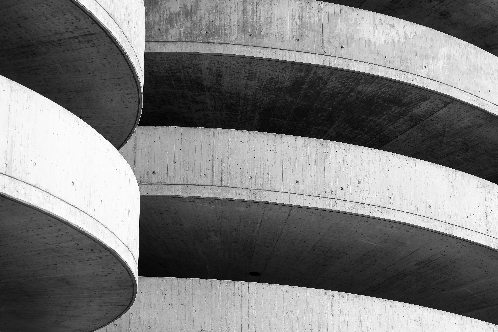
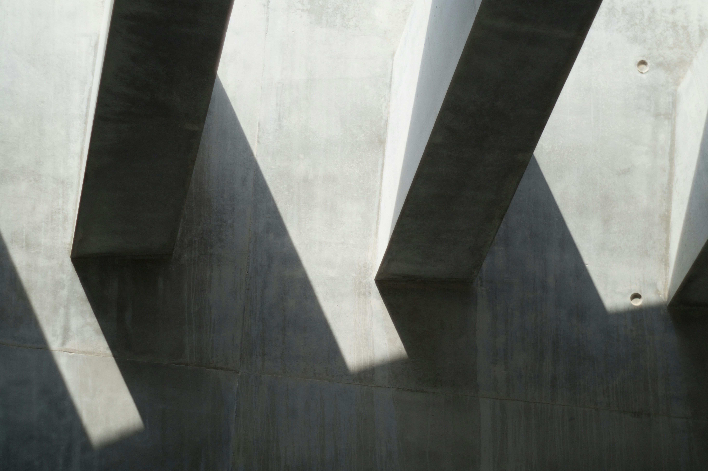
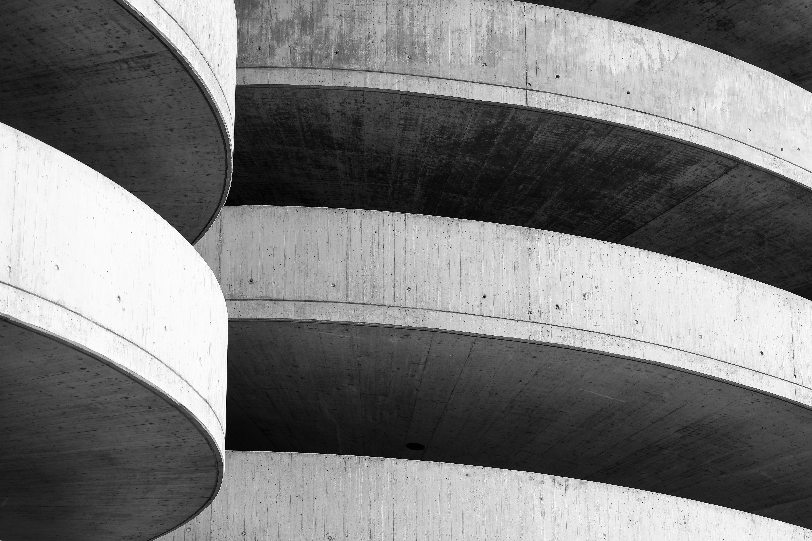
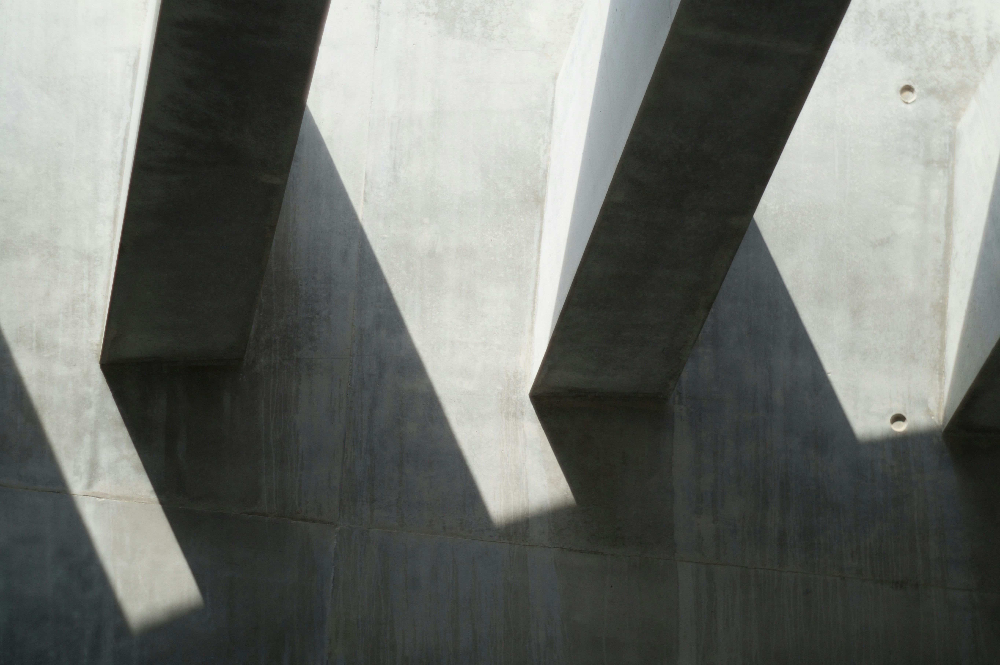

Pessoas mais notáveis do brutalismo
Le Corbusier (1887-1965)
Le Corbusier, nascido Charles-Édouard Jeanneret-Gris, foi um arquiteto franco-suíço que é amplamente considerado um dos pioneiros do modernismo e do brutalismo.
Alison e Peter Smithson (1928-1993 e 1923-2003)
Alison e Peter Smithson foram um casal de arquitetos britânicos que desempenharam um papel crucial no desenvolvimento do brutalismo na Grã-Bretanha.
Paul Rudolph (1918-1997)
Paul Rudolph foi um arquiteto americano que se destacou como um dos principais expoentes do brutalismo nos Estados Unidos.
O que caracteriza uma arquitetura brutalista?
A arquitetura brutalista é marcada por uma estética robusta, funcional e despojada, que enfatiza a honestidade dos materiais e a simplicidade das formas. Surgida no período pós-Segunda Guerra Mundial, essa corrente arquitetônica foi uma resposta à necessidade de reconstrução e à busca por uma expressão arquitetônica que refletisse a realidade social e econômica da época.
A característica mais distinta do Brutalismo é o uso do concreto aparente, ou "béton brut", que não é revestido ou pintado, deixando visíveis as texturas das fôrmas utilizadas na construção. Este material não apenas define a aparência dos edifícios brutalistas, mas também simboliza a durabilidade e a força bruta, desafiando as convenções estéticas de superfícies lisas e ornamentadas.
Os edifícios brutalistas são frequentemente compostos de formas geométricas claras e rigorosas. A ênfase está na funcionalidade e na expressão estrutural direta, com volumes que muitas vezes se destacam por sua monumentalidade e presença imponente. Esta abordagem resulta em uma estética que pode parecer austera, mas que transmite uma sensação de solidez e permanência.
Tempos do
brutalismo
Origem e influências iniciais
- 1945: Pós-Segunda Guerra Mundial, necessidade de reconstrução de cidades devastadas. Crescimento do uso de concreto por ser barato e abundante.
1950s - Surgimento e Primeiros Exemplos
- 1952: Conclusão da Unidade de Habitação em Marselha, consolidando o estilo brutalista.
- 1953: Alison e Peter Smithson projetam a Escola Secundária de Hunstanton, Reino Unido, um marco na arquitetura brutalista.
- 1955: O termo "Brutalismo" é popularizado por arquitetos britânicos como os Smithsons e pelo crítico Reyner Banham.
1960s - Expansão Global
- 1962: Finalização do edifício do Boston City Hall, nos Estados Unidos, um ícone brutalista projetado por Kallmann McKinnell & Knowles.
1970s - Popularidade e Críticas
- 1972: Abertura do Barbican Centre em Londres, um grande complexo residencial e cultural em estilo brutalista.
- 1975: Brutalismo atinge seu auge, mas começa a enfrentar críticas por sua estética austera e suposta frieza.
1980s - Declínio
- 1985: A arquitetura pós-moderna começa a ganhar força, trazendo um afastamento do Brutalismo.
1990s - Redescoberta e Preservação
- 1992: Primeiras iniciativas de preservação de edifícios brutalistas, reconhecendo seu valor histórico e arquitetônico.
2000s - Renascimento e Valorização
- 2006: Criação do site "SOSBrutalism", uma plataforma dedicada a catalogar e preservar edifícios brutalistas.
- 2008: National Theatre em Londres, um exemplo brutalista, recebe status de Grade II* Listed Building, reconhecendo sua importância.
2010s - Popularidade Renovada
- 2013: Exposição "Concrete" na Pinakothek der Moderne em Munique, celebrando a arquitetura brutalista.
- 2015: Redes sociais como Instagram aumentam a visibilidade e o interesse por edifícios brutalistas.
2020s - Continuidade e Influência
- 2021: Brutalismo continua a influenciar novos projetos arquitetônicos, com uma ênfase renovada em sustentabilidade e reutilização de edifícios existentes.
- 2024: Crescente valorização e proteção de edifícios brutalistas em todo o mundo, com várias cidades adotando políticas de preservação para esses marcos arquitetônicos.
A arquitetura brutalista, com sua imponência e honestidade material, continua a inspirar e a provocar debates décadas após seu surgimento. Este estilo arquitetônico, marcado pelo uso do concreto bruto e pelas formas geométricas simplificadas, reflete uma época de transformação social e econômica, onde a funcionalidade e a durabilidade eram prioridades. Edifícios brutalistas não são meras construções; são declarações audaciosas de design e engenharia que desafiam as convenções estéticas tradicionais.
Neste site, exploramos as origens do brutalismo, suas características distintivas e os principais protagonistas que moldaram este movimento. Através dos exemplos apresentados, podemos apreciar a beleza austera e a integridade estrutural que definem o brutalismo, celebrando sua contribuição única à paisagem arquitetônica global.